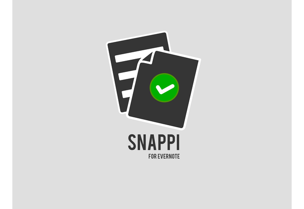
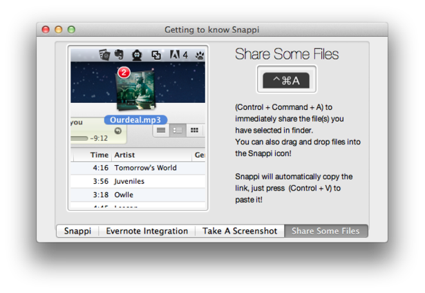
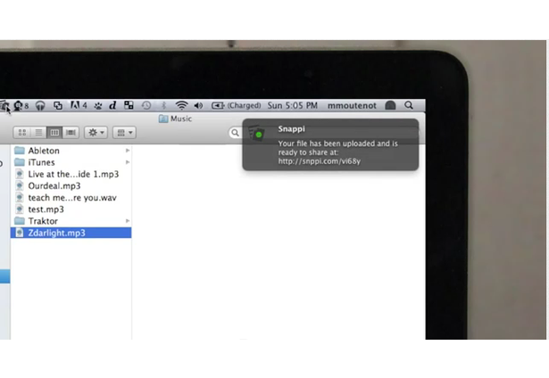

mrshll.com

Snappi was developed while living in San Francisco and working at Mozilla in the Summer of 2012. At Mozilla I was on the infosec team, and my project was to containerize Firefox’s process. The project to sandbox Firefox was incredibly difficult, and progress to understand the build process was slow. To mix it up, I spent spare time developing a native OSX application that allowed quick sharing of files and screenshots. It integrated with services like Evernote and Dropbox.
Thankfully, I’ve gotten better at making these videos.
Snappi is the quickest way to share screenshots and files with your friends. Once you take a screenshot or select one or more files, a unique, shortened link will be generated and copied to your clipboard; all you have to do is press paste!
Snappi is lightweight, unobtrusive and runs in the background of your desktop. Each file is automatically uploaded to an Evernote notebook, keeping everything neat, organized and accessible.
It was a great way to learn Objective-C, not to mention the end-to-end process of designing and market a tool to the public. It was my first time too as being the sole recipient of customer input and feedback. Even though the tool itself was lighthearted, I took any input seriously and made improvements quickly.
 